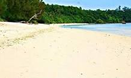
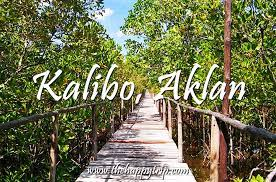
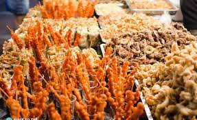

About Me
About Me Travel Experiences
Travel Experiences Favorite Food
Favorite FoodCarl John R. Zoleta
BSCOE 2-6About
My name is Carl John Ruanto Zoleta. I am a 20-year-old sophomore currently studying at Polytechnic University of the Philippines, taking up Bachelor of Science in Computer Engineering.
Carl John R. Zoleta
BSCOE 2-6Achievements
In over a decade of studying, I have been a consistent honor student in our class. There are tough times that I have encountered during my studies that really tested my determination but I was able to pursue and paved my way closer to my dream life, some of my achievements are as follows:
- Academy Awardee since Elementary
- With High Honors - Junior High School and Senior High School
- Leadership Awardee - Junior High School
- 1st Placer - AP Kontemporaryong Isyu Quiz Bee - District Meet
- 4th Placer - AP Kontemporaryong Isyu Quiz Bee - EDDIS Meet
- SK Barangay iSKolar - Barangay Muzon
Carl John R. Zoleta
BSCOE 2-6Travel Experiences
When it comes to traveling, I am not really a fan of that. I usually spend my free times at home. But since we are talking about my travel experiences, let me share some of my travel journey.
1. Patnanungan, Quezon - Every summer, way back from 2016-2019, we usually visit my grandmother's place in Patnanungan, Quezon, the place where I was born. It is an island that is part of Polillo Group of Islands. This small village is very close to my heart for it is the place where I grow up. One of the things that I'm really proud of that place is its natural beauty, the beaches are stunning and the waters crystal clear. One of the tourist spot there is the Minasawa island, a bird sanctuary in the heart of the ocean.
2. Aklan - The second travel experience that I want to share is my experiennce in my father's hometown, the beautiful Aklan. we all know that in Aklan is where the famous Boracay Island located. We went here a long time ago to visit my grandparents. We were able to see the astonishing culture and tourist spots there.
Carl John R. Zoleta
BSCOE 2-6Food
I love eating, but ironically I am a picky type of person when it comes to food. I don't usually eat vegetables and prefer eating the unhealthy ones. Here are some of my favorite food.
1. Pastries - I love any type of patries, whether it is cookie, cupcakes, cakes, or whatnot.
2. Adobo - There is no Filipino that doesn't love Adobo. My favorite type of this dish is Chicken and Pork Adobo.
3. Street Food - These food are my comfort food, to be honest. I miss eating this right after our classes back in Senior High School. Some of my all-time favorites are Isaw, Kwek-kwek, Fishball, and Corndog.
Carl John R. Zoleta
BSCOE 2-6Education
- Elementary (2009-2015) - Benito Nieto Elementary School
- Junior High (2015-2019) - Parada National High School
- Senior High (2019-2021) - Sacred Heart Academy of Sta. Maria, Bulacan
I am currently as Sophomore student at Polytechnic University of the Philippines - Sta. Mesa. BS Computer Engineering was not my dream course, rather BS Civil Engineering, but I believe I am destined in this program. During my college application, I tried my luck in other universities such as Bulacan State University, Pamantasan ng Lungsod ng Maynila, and UP Diliman which I luckily passed but did not pursue.
 Facebook
Facebook Email
Email